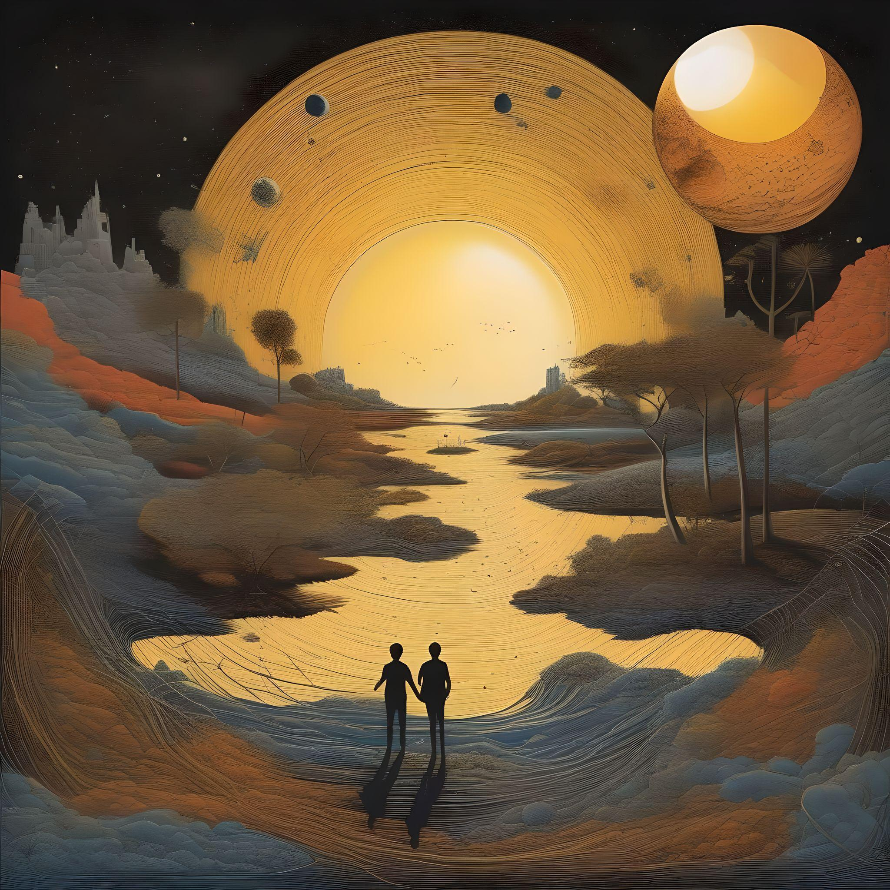

Alvorecer
Capítulo 1
Capítulo 1
Às vezes, acordamos todos os dias e nos deparamos com muitos
problemas e dificuldades, sejam eles grandes barreiras ou sejam
eles pequenos muros. A verdade é que nunca paramos para pensar
na maneira como escolhemos lidar com isso tudo e na forma como
isso nos afeta.
Em um tempo passado muito distante do nosso, que veio muito antes
da criação do próprio tempo e da contagem dos anos. Os primeiros
seres a serem criados foram os descendentes do sol junto aos
descendentes da lua, ambos os povos tinham suas próprias formas
e maneiras de agir e pensar. Os filhos do sol brilhavam de uma
forma intensa carregando a luz de seus ancestrais, já com os
filhos da lua podemos notar toda a delicadeza e brilho lunares.
Mas como não tinham sua própria luz, era comum que refletissem
o brilho dos filhos do sol para que ambos possam viver sempre
juntos, juntos e, ao mesmo tempo, distantes, pois talvez o fato
mais intrigante sobre essa estranha terra, seria o fato de
que todos sempre soubessem que na realidade os dois lados deste
mesmo mundo eram separados por uma barreira que não podia ser
vista ou tocada, que partia do centro da terra se estendendo
até o lar dos seres celestiais bem no alto dos céus, e que caso
alguém ousasse tocar nessa barreira, a ira dos celestiais
cairia imediatamente sobre eles que seriam imediatamente punidos
tendo suas vidas completamente apagadas no mesmo instante, o que
os separaria para toda a eternidade, dessa forma mesmo que
esses seres precisassem muito um do outro, eles nunca sequer
trocavam alguns olhares entre si, não por um motivo ruim, mas
por não terem escolha a não ser respeitar a vontade dos seres
celestiais de deixar ambos os lados separados, já que eles de
forma alguma podiam fazer nada que pudesse de fato mudar isso.

Mas aparentemente às vezes existem aqueles que sempre pensam
um pouco fora do padrão, aqueles que sempre querem buscar um
jeito ou uma forma diferente de fazer algo ao invés de apenas
aceitar o modo como todos querem que algo seja feito, não que
isso seja uma coisa ruim, longe disso, acho que o mundo talvez
poderia ser um pouco mais assim para variar.
Acontece que em certo dia acabamos dando de cara com um
certo descendente do sol que pode se encaixar muito bem nessa
classe de viver sempre além de sua própria mente, um até então
comum rapaz que podemos chamar de Sunset (pôr-do-sol) estava
andando por aí perdido nos seus próprios pensamentos quando de
repente se deparou com uma cena curiosa de uma garota observando
uma árvore e anotando tudo em seu simples caderno, essa garota
era uma descendente da lua, isso mesmo, do outro lado do muro.
Uma cena que deixou Sunset bastante intrigado e pensativo, ele
ficou observando durante um tempo, até perceber que a garota
estava, na verdade, anotando o comportamento de algumas aves que
viviam naquela árvore, esse fato o intrigou, já que uma cena
como aquela não era uma coisa muito comum de acontecer para os
seres daquela época, por isso, ele então acreditou ao perceber
que finalmente tinha encontrado alguém que pensasse mais além
assim como ele fazia.
Sunset se aproximou do muro e cumprimentou a garota com um belo
sorriso, ela parecia encantada e acabou devolvendo a gentileza.
Naquele momento Sunset acabou puxando um livro de seu bolso, um
pequeno livro de poemas escolhendo o seu preferido e mostrando
para ela, ela parecia confusa com tudo aquilo, nesse momento ele
acabou apontando para a garota como se ele estivesse questionando
ela sobre qual seria o seu nome, foi quando ela levantou o seu
caderno com o nome escrito. Sunset se deparou com letras muito
diferentes contendo formas e linhas únicas, até perceber que na
verdade eles tinham linguagens totalmente diferentes.
O que Sunset pode fazer então para saber mais sobre a moça que
tanto chamou a sua atenção? Seria esse um sinal de que, na verdade
os seres celestiais não queriam que os dois se conhecessem? Poderia
ser esse, então, um segundo muro que separava os dois?

Foi quando a garota observou a reação confusa dele com sua resposta, que ela entendeu se tratarem de dois idiomas totalmente diferentes o que a fez pensar um pouco e chamar a sua atenção, Sunset observou lentamente enquanto a garota apontava para si mesma para logo depois apontar para a luz da lua refletida em uma poça de água no chão do outro lado do muro, com seu intelecto avançado, Sunset entendeu que aquela garota se chamava Moonlight (Luz-do-luar) que o fez no mesmo momento apontar para si e logo em seguida fazer um sinal que parecia pedir para que ela o esperasse. Em seguida os dois olharam atentamente e perceberam que o sol começava a sumir pelo horizonte, já que ambos passaram a tarde toda conversando, e foi aqui se Sunset apontou para si e depois para o sol que lentamente descia pelo horizonte, Moonligth imediatamente entendeu e reconheceu o seu nome como Sunset (Pôr-do-sol) dando um belo sorriso. Naquele mundo, sol e lua apenas nasciam em ambos os lados correspondestes aos seus filhos, enquanto o sol nascia e depois descia novamente pelo mesmo lado, a lua fazia o mesmo, de alguma forma os seres celestiais desse mundo no fim fizeram com que a lua fosse capaz de guardar parte da luz solar para poder usar durante a noite, uma característica única e de certa forma inexplicável dessa terra estranhamente bem organizada.
